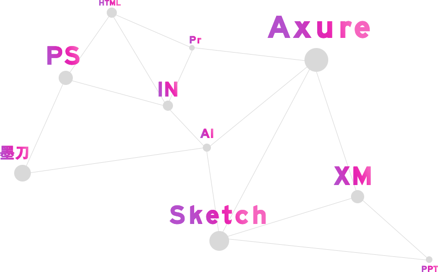

About
您好！我是申海振，毕业于中原工学院，并获得学士学位.
- 拥有5年的互联网行业交互设计经验;
- 负责过兴业证券优理宝、优企在线、安利的挑战星球等多个平台（APP、PC、小程序）产品的交互设计;
- 具有用户研究和需求分析的能力，能根据产品需求快速锁定用户需求和痛点，优化用户体验以及可用性测试.
My Skills
Works Experience
不是每一次努力都有收获，但是，每一次收获都必须努力。人若有志，就不会半坡停止。我的信念：相信我能够完成任何我要完成的事情，并且坚信它值得我为此而付出和努力。
未来，期待与你一起同行~